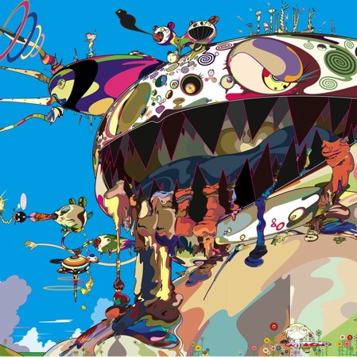

Welcome



The Cooling of Japan
JAPNS 121
Japanese Film and New Media
556936 001
T R 01:00P - 02:15P
111 WARTIK
Professor:
Jonathan E. Abel
Office Hours:
10-12 Tuesdays and Thursday
or by appointment
Office:
441 Burrowes Building
Tel: 814 865 2263
Teaching Assistant:
Darwin Tsen
[email redacted]
OFFICE HOURS:
9-12:00 Wednesdays
or by appointment
OFFICE:
447 Burrowes
Welcome to Japanese Film and New Media
A survey of Japanese film and new media in the twentieth century and beyond, with attention to changing cultural settings. Taught in English.
The Cooling of Japan
Japan is cool now, but it wasn’t always. In fact, it hasn’t been for long and it is unlikely to stay that way for long. So why is Japan cool? Why now? How did it get that way? What does it say about Japan? What does it say about us?
This course traces the cooling of Japan in order to improve understanding of a culture that too often gets explained away as unique, strange, exotic, or just cool.
Just as explaining a joke can remove any trace of its humor, tracing the lineage of cool Japan will to some extent make it seem not so cool. Doing so has the added benefit of teaching us about cool, about Japan, and about the challenges of cultural difference in an interconnected world.
Beginning with question of cultural and media difference, the course navigates trendy topics such as cell phone novels, otaku culture, and social networking and provides a broad overview of the history of last century’s new medium—film.
COURSE OBJECTIVES
To find answers to questions of difference in kind between cultures of new media and those of old media.
To understand salient features and develop basic knowledge in the following areas: Japanese film history. film aesthetics, technical aspects of the film medium, and Japanese cultural history.
To learn to interpret the popular media of Japan through sensitivity to cultural context and symbolic content while coming to understand the stakes involved in interpretation.
To refine your understanding of the relationship between art, media, and social/cultural context.
To learn to organize thoughts and express them clearly.
To learn to think critically about media’s unique role in representation.
To become a more engaged, critical spectator, reader, and interpreter of cultural products.
2011
edition